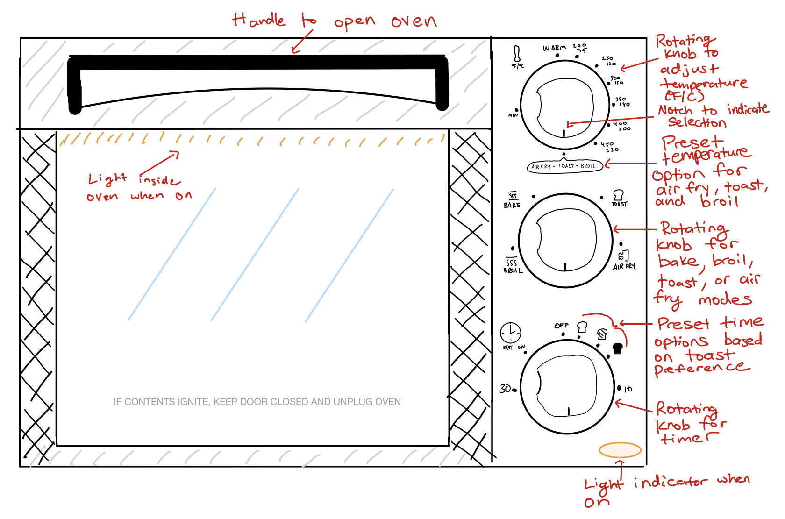
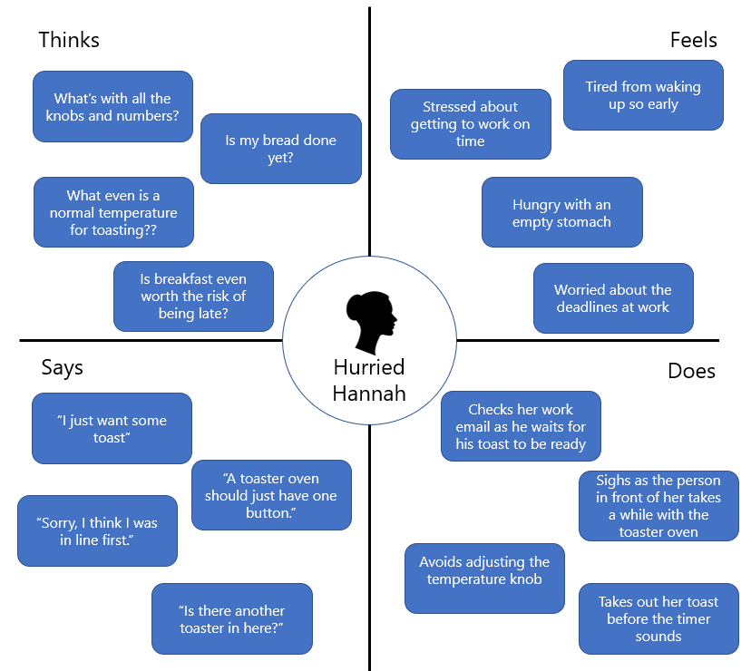
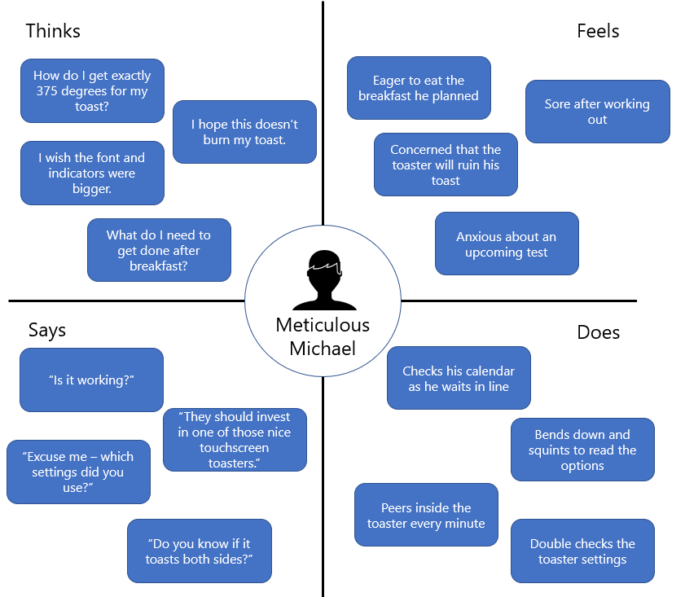
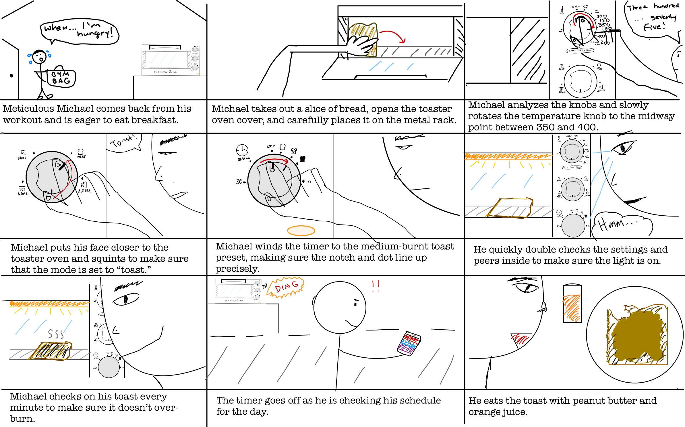

Toaster Oven Personas and Storyboard
I absolutely love eating warm bread and pastries. In this project, I explore a
classic UX task with a toaster oven interface where I
observe users interacting with a
toaster oven, interview them about their experiences, form two personas, and sketch out a
storyboard.
I hope you enjoy!
I - Interface Sketch and Description

This toaster oven interface strives to address difficulties a user may encounter when
customizing settings for their
specific food-heating objective. The interface features a large handle to open the front glass
cover
and three separate rotating
knobs for temperature, mode (i.e. bake, toast, broil, or air fry), and time customization. It
also
includes visual indicators on
the time knob so a user can set a specific burn level for their toast as well as a bright orange
light indicator at the bottom
to show when the oven is on.
II - Key Observations of Three Users (A, B, and C)
- Users A and B put the item into the oven and closed the door before looking at the knobs. User C
held their bread in their hand and adjusted the first two knobs before putting the bread in.
- When looking at the knobs, all users bent over so that they were at eye level with the
knobs. User C stared at the interface for a few seconds before actually touching the
knobs while the other users immediately started to move knobs.
- Users B and C had furrowed eyebrows and squinted as they looked at or used the knobs.
- User A only turned the bottom two knobs, disregarding the temperature knob, while the other two
users moved all three of the knobs in order from top to bottom.
- Only User C had the temperature knob turned to the toast preset even though all users were using
the oven to toast something.
- Once the timer started to tick, all the users would look and scroll or
type on their phone. User C peered through the glass one more time before pulling up something on
their phone.
III - Prepared Interview Questions
- What was your first reaction upon seeing the knobs on the toaster oven?
- What was the most difficult step to accomplish when using the toaster oven?
- Imagine you are living in your ideal, dream-world. What are some features that your toaster
oven would have?
- How many times have you used a toaster oven in the past seven days?
- What do you most frequently use a toaster oven for?
IV - Takeaways from Interview Responses
- All users were using the toaster oven to toast either a piece of bread or croissant, and most of
them were looking specifically for a 'toast' option when they first approached the toaster oven.
- For most users, the presence of three knobs coupled with many different settings and numbers in
small fonts was confusing.
- The two most common difficulties users had with the toaster oven were figuring out what temperature
to use and making sure the notches on the knobs aligned perfectly with the options they wanted.
- Some ideal toaster oven features mentioned by users included: precise control over temperature and
time, one-button presets for common toasting preferences, and a large screen that displays the
inside of the oven at any given time. (Sidenote: I loved hearing about these cool features!)
- All users use a toaster oven approximately 5-7 times a week.
IV - Persona 1 - Hurried Hannah

Description: Hurried Hannah is a full-time employee at a big firm who rushes to
the
office every morning
but wants to
fit in a quick breakfast before work. She despises having to figure out a bunch of complex buttons or
knobs on a toaster oven.
Hurried Hannah represents how two of the users I observed started to turn the knobs without ever pausing
to examine them first and how one user did not even bother to adjust temperature. Additionally, all
users occupied themselves with something on their phone almost immediately after the toaster
oven timer started, indicating that they had other tasks to attend
to.
V - Persona 2 - Meticulous Michael

Description: Meticulous Michael is a full-time pre-med student who eats an
identical
breakfast every
morning and is
very particular about his food. He does not like how he has to eye the temperature and time using the
knobs on the toaster oven and wishes he had access to more precise temperature and time increments.
Meticulous Michael reflects how some users were more careful when preparing to toast. One user stared at the knobs for a couple seconds before adjusting the settings. Two of the users also
squinted their eyes and furrowed their eyebrows as if focused on analyzing the knobs. One user also
double checked the knobs and glanced inside the toaster oven before parting from the toaster.
VI - Storyboard - Meticulous Michael
I am no artist, but I hope this rudimentary storyboard helps demonstrate how a person like Meticulous
Michael would use the toaster oven from beginning to end.

Thanks for going on this journey with me! I had a lot of fun
learning about how people use toaster ovens and about the different steps in the process of creating
personas
and storyboards. I hope you also learned a thing or two about this process, but if not, I hope you got a
good laugh from my drawings!